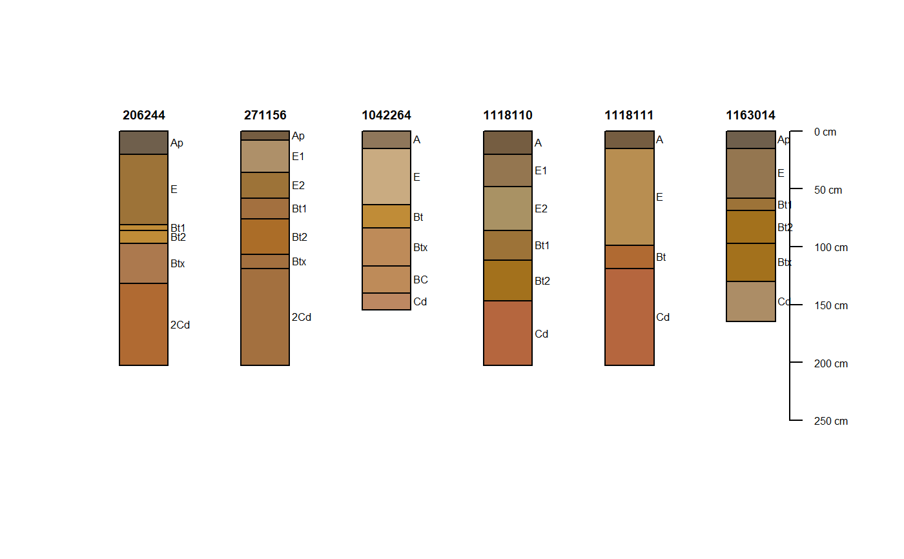

fetchNASIS.RdFetch commonly used site/pedon/horizon data or component from NASIS, returned as a SoilProfileCollection object.
fetchNASIS(from = 'pedons', url = NULL, SS=TRUE, rmHzErrors=TRUE, nullFragsAreZero=TRUE, soilColorState='moist', lab=FALSE, fill = FALSE, stringsAsFactors = default.stringsAsFactors() ) getHzErrorsNASIS(strict=TRUE)
| from | determines what objects should fetched? ('pedons' | 'components' | 'pedon_report') |
|---|---|
| url | string specifying the url for the NASIS pedon_report (default: NULL) |
| SS | fetch data from the currently loaded selected set in NASIS or from the entire local database (default: TRUE) |
| stringsAsFactors | logical: should character vectors be converted to factors? This argument is passed to the uncode() function. It does not convert those vectors that have been set outside of uncode() (i.e. hard coded). The 'factory-fresh' default is TRUE, but this can be changed by setting options(stringsAsFactors = FALSE) |
| rmHzErrors | should pedons with horizonation errors be removed from the results? (default: TRUE) |
| nullFragsAreZero | should fragment volumes of NULL be interpreted as 0? (default: TRUE), see details |
| soilColorState | which colors should be used to generate the convenience field 'soil_color'? ('moist' | 'dry') |
| lab | should the phlabresults child table be fetched with site/pedon/horizon data (default: FALSE) |
| fill | (fetchNASIS(from='components') only: include component records without horizon data in result? (default: FALSE) |
| strict | how strict should horizon boundaries be checked for consistency: TRUE=more | FALSE=less |
a SoilProfileCollection class object
This function imports data from NASIS into R as a S3 R object specified by the aqp R package, known as a soil profile collection object. It flattens NASIS's pedon and component tables, including their various child tables, into several more easily managable data frames. Primarily these functions access the local NASIS database using an ODBC connection. However using the fetchNASIS() argument from = "pedon_report", data can be read from the NASIS Report 'fetchNASIS', as either a txt file or url. The primary purpose of fetchNASIS(from = "pedon_report") is to faclitate importing datasets larger than 8000+ pedons/components.
The value of nullFragsAreZero will have a significant impact on the rock fragment fractions returned by fetchNASIS. Set nullFragsAreZero = FALSE in those cases where there are many data-gaps and NULL rock fragment values should be interpretated as NULLs. Set nullFragsAreZero = TRUE in those cases where NULL rock fragment values should be interpreted as 0.
This function attempts to do most of the boilerplate work when extracting site/pedon/horizon or component data from a local NASIS database. Pedons that are missing horizon data, or have errors in their horizonation are excluded from the returned object, however, their IDs are printed on the console. Pedons with combination horizons (e.g. B/C) are erroneously marked as errors due to the way in which they are stored in NASIS as two overlapping horizon records.
See getHzErrorsNASIS for a simple approach to identifying pedons with problematic horizonation.
See the NASIS component tutorial, and NASIS pedon tutorial for more information.
# \donttest{ # check required packages if(require("aqp") & requireNamespace("RODBC")) { # test that NASIS db connection is set up # note that you must setup this connection ahead of time # see inst/doc/setup_ODBC_local_NASIS.pdf if(any(grepl(names(RODBC::odbcDataSources()), pattern="nasis_local"))) { ## 1. fetchNASIS(from='pedon') NASIS setup # query depends on some pedon data in your selected set f <- try(fetchNASIS(from = 'pedons')) # note: wrap in try() to capture error in case of empty selected set # plot only those profiles with densic contact if(!inherits(f,'try-error')) { # which pedons have densic.contact==TRUE idx <- which(f$densic.contact) # if there are any pedons with densic contacts, plot them if(length(idx)) plot(f[idx, ], name='hzname') } else { message(f[1]) } ## 2. fetchNASIS(from='component') NASIS setup: # perform a DMU-* query against the national database fc <- try(fetchNASIS(from = 'components')) # note: wrap in try() to capture error in case of empty selected set ## 3. fetchNASIS(from='pedon_report') NASIS setup: # run the 11-IND NASIS report 'fetchNASIS' against the national database # the result will automatically be opened and saved as fetchNASIS.txt # in NASIS Temp folder # the fetchNASIS.txt fileis read by fetchNASIS(from = 'pedon_report') # alternate: run offline against national db and supply `url` argument try(f <- fetchNASIS(from = 'pedon_report')) # note: wrap in try() to capture error in case of empty selected set } }#>#>#> #>#>#>#> Warning: some records are missing rock fragment volume, these have been removed#>#> Warning: some records are missing artifact volume, these have been removed#> Warning: all records are missing artifact volume (NULL). buffering result with NA. will be converted to zero if nullFragsAreZero = TRUE.#>#>#>#>#>#>#>#> Warning: No horizon data in NASIS component query result.#> Error in (function (classes, fdef, mtable) : #> unable to find an inherited method for function 'site<-' for signature '"data.frame"' #> Error in .fetchNASIS_report(url = url, rmHzErrors = rmHzErrors, nullFragsAreZero = nullFragsAreZero, : #> the temp file C:/ProgramData/USDA/NASIS/Temp/fetchNASIS.txt #> doesn't exist, please run the fetchNASIS report from NASIS# }